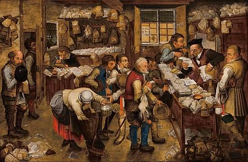

Imagine meeting someone who has completely forgotten their past. They do not know where they came from, what mistakes they made, or what lessons they learned. Would they be able to make wise decisions about the future? Probably not. The same applies to nations. History helps us understand where societies have come from, the challenges they faced, and the lessons that can guide future generations.
History is the study of past events, people, civilizations, institutions, and societies. It helps us understand how the world has changed over time and how past events continue to influence the present.
As an SHS student, you may study topics such as:
History can lead to careers such as:
Many students think History is simply about memorizing dates and events. In reality, History teaches investigation, analysis, critical thinking, research, and communication. The ability to understand patterns from the past and apply lessons to present-day problems is a powerful skill valued in many professions.
This is only a small introduction. If you want to understand how programmes connect to university courses, careers, opportunities, and future success, get a copy of:
The guide designed to help students make informed decisions about their future and discover opportunities they may never have considered.